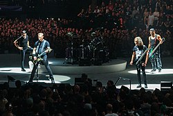

Data Band Metallica
| Informasi Latar Belakang | |
|---|---|
|  | |
| Asal | Los Angeles, California, Amerika Serikat |
| Genre | Heavy metal, thrash metal, speed metal, hard rock |
| Tahun Aktif | 1981–sekarang |
| Label | Elektra, Vertigo, Megaforce, Warner Bros. |
| Artis Terkait | Slipknot, Megadeth, Ozzy Osbourne, Suicidal Tendencies |
| Situs Web | metallica.com |
Metallica telah mengukir sejarah yang tak terlupakan dalam dunia musik...


Anggota

Lars Ulrich

James Hetfield

Kirk Hammett